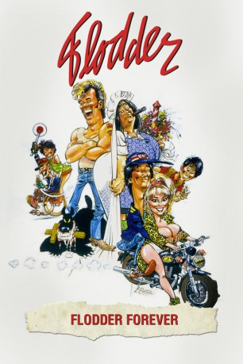

#6310 Flodder Forever - Eine Familie zum Knutschen
 
 IMDB-Wertung: 5.4 / 10
IMDB-Wertung: 5.4 / 10  Metascore: 0
Metascore: 0 
Sie sind laut, ordinär und verdammt kriminell - die Flodders. Eine wüste Familienbrut, die ihren Nachbarn zeigt, was sie von Snobs und feinen Leuten hält. Neben dem üblichen Grad an Grauen und Verwüstung bescheren sie ihrer Umgebung diesmal aber noch ein paar ganz besondere Probleme.
Jahr: 1995
Dauer: 124 Minuten
FSK: 12
Land: Niederlande Studio: MCP Sound & Media AGTonspuren:
Untertitel: Deutsch,
Auflösung: 1080p (1920x1080) Größe: 7833 MB
Genre: Komödie
Regisseur: Dick Maas
Drehbuch: Beau Willimon
Soundtrack:
Darsteller:
- René van Zinnicq Bergman als Neef van dhr Brandwijk
- Nelly Frijda als Ma Flodder
- Coen van Vrijberghe de Coningh als Johnnie Flodder
- Stefan de Walle als Zoon Kees Flodder
- Tatjana Simic als Dochter Kees Flodder
- Sander Swart als Henkie Flodder
- Scarlett Heuer als Toet Flodder
- Herman Passchier als Opa
- Lou Landré als Jacques 'Sjakie' van Kooten
- Hugo Metsers als Pa Flodder
- Bert André als Buurman Neuteboom
- Lettie Oosthoek als Buurvrouw Neuteboom
- Alfred van den Heuvel als Van Brandwijk
- Marloes van den Heuvel als Mevrouw Vonk
- Wim Van den Heuvel als Zakenman
- Caya de Groot als Mirjam
- Gees Linnebank als Zwerver
- Harold Böhne als Vriend van dochter Kees
- Edmond Classen als Ambtenaar
- Serge-Henri Valcke als Man op het toilet
- Joep Onderdelinden als Politieagent
- Ineke Veenhoven als
- Maya van den Broecke als
- Erik Arens als Tennisjongen
- François Beukelaers als Vader Mirjam
- Kees Coolen als Veilingmeester
- Bart den Ouden als Tennis boy
- Petra van Hartskamp als Hoofdagente
- Rik Hoogendoorn als Shipping chief in harbor
- Trudy de Jong als
- Marjolein Keuning als Cosmeticadame
- Hans Leendertse als Lid commissie
- Peer Mascini als Ambtenaar van de burgelijke stand
- Karin Meerman als Mevrouw Bruinsma
- Har Smeets als
- Freark Smink als
- Laus Steenbeeke als Hennie
- Miguel Stigter als Kareltje
- Rob van de Meeberg als Commissielid
- Wil van der Meer als Commissielid
- Aafke van der Meij als Koffiejuffrouw
- Freek van Muiswinkel als Man in auto
- Ron de Groen als Mover , uncredited
- Erik de Vogel als Daniel, man who interrupts marriage , uncredited
Datei: X:\3-Trilogie(A-F)\Flodder\Flodder Forever - Eine Familie zum Knutschen (1995, FSK12, 1920x1080).mkv seit 08.06.2017
Festplatte: HD Collection-2(A-Z)-3(A-M)
 Alle Filme aus Gruppe '3-Trilogie(A-F)\Flodder'
Alle Filme aus Gruppe '3-Trilogie(A-F)\Flodder'